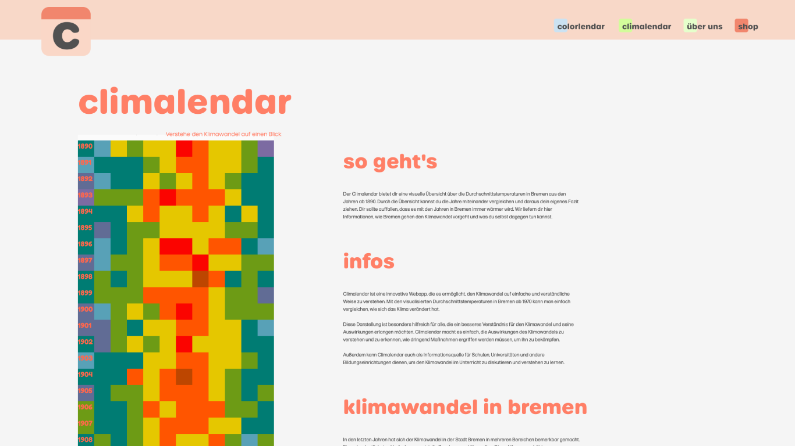

A data-driven experience that transforms climate data into color-based products and calendar visualizations, connecting environmental awareness with personal memory.
Data-to-Color System / Calendar Visualization / Interaction Logic / Export Feature
Interactive Web Experience / Climate Data / Color System / Product Personalization
Group Project / 4 Members
This project explores how climate data can become personal. Rather than presenting temperature data as abstract numbers, the system translates climate information into color-based experiences that users can interact with and apply to everyday objects.
By selecting a specific moment in time, users generate personalized products that carry both emotional meaning and environmental context.
The project consists of two interconnected platforms. Colorlendar converts monthly average temperatures in Bremen into color values for personalized products, while Climalendar presents long-term climate changes through a calendar-based visualization.


Temperature data is translated into RGB color values, allowing climate information to become a visual and emotional material. This system connects numeric data with color, product customization, and personal memory.


Climalendar visualizes long-term temperature changes in Bremen from 1890 to 2022 through a calendar format, making climate trends more accessible and intuitive.

This was a group project with four members. I was responsible for the system that translates temperature data into RGB color values, the calendar-based visualization using climate data from 1890 to 2022, the interaction logic for exploring date-based data, and the image export feature for generated visuals.